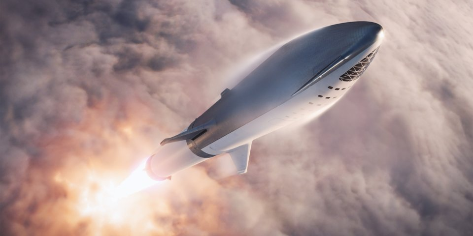

The futre spacecraft "Spaceship" from the company SpaceX who plans
send to mars and beyond.
Here's a story time of the development of spaceships
400 a.C - One philosopher and mathematical called Archytas greek show a wooden dove that was suspended on wires.
The dove was pushed by the escaping steam.
300 a.C - Hero of Alexandria invented the eolipile (also called Hero's engine).
It was a sphere-shaped device that sat on top of a boiling water pool, the gas from the steaming water entered the spill through two L-shaped tubes on opposite sides.
The thrust created by the escaping steam spun the sphere.
1 d.C - The chinesse were the first to use real rockets. they was used for colorful exibitions during religius festivals, similar to fireworks.
200 d.C - The rockets were mainly used as military weapons, including a version called Congreve rocket, developed by the British army in the early 19th century.
1903 d.C - Russian Konstantin E. Tsiolkovsky published what is now known as the "rocket equation" in 1903, in a Russian aviation magazine, according to NASA.
The equation refers to the relationships between rocket speed and mass, as well as how quickly gas exits when it exits the propeller exhaust system and how much propellant there is.
Tsiolkovsky also published a multi-stage rocket theory in 1929.
1903 d.C - Russian Konstantin E. Tsiolkovsky published what is now known as the "rocket equation" in a Russian aviation magazine, according to NASA.
The equation refers to the relationships between rocket speed and mass, as well as how quickly gas exits when it exits the propeller exhaust system and how much propellant there is.
Tsiolkovsky also published a multi-stage rocket theory in 1929.
1984 d.C - Hermann Oberth (1894-1989) was born in Romania and then moved to Germany. According to NASA, he became interested in rockets at an early age,
and at 14 he imagined a "recoil rocket" that could move through space using nothing but his own escape. As an adult, his studies included multi-stage rockets and how to use a rocket to escape Earth's gravity.
His legacy is contaminated by the fact that he helped develop the V-2 rocket for Nazi Germany during World War II; The rocket was used for devastating bombings in London. Oberth lived for decades after space exploration began and saw rockets take people to the moon and watched the reusable crew of the space shuttle take space again and again.
1957 d.C - On October 4 a rocket was used for the first time to send a Soviet satellite to space in the Sputnik mission.
1958 d.C - After some failed attempts, the United States used a Jupiter-C rocket to lift its Explorer 1 satellite into space on February 1.
1961 d.C - Russian cosmonaut Yuri Gagarin was the first human in space, leaving Earth on April 12, aboard a Vostok-K rocket for a multiorbit flight. Alan Shepard made the first American suborbital flight on a Redstone rocket.
1960 d.C - NASA developed the Apollo space program as part of the space race with the Soviet Union during the Cold War.
1962 d.C - John Glenn becomes the first American to travel the orbit of the Moon in 20 February. Glenn recorded more than 130 thousand kilometers in his Amistad 7 capsule, circling the planet three times.
1963 d.C -In NASA's Mercury program, the agency switched to Atlas rockets to reach orbit, John Glenn became the first American to orbit Earth.
1963 d.C - The Soviet Union sends the first woman into space on June 16. Valentina Tereshkova, a former textile worker, went around the earth 49 times for three days in space. She was injured during the landing and thereafter required a lot of makeup to show her face in public.
1965 d.C - Alexei Leonov conducts the first spacewalk from the Voskhod rocket, manned by two cosmonauts on March 18. The mission was about to end in disaster when Leonov's space suit inflated into space. The cosmonaut had to deflate it in order to return to the ship.
1967 d.C - The "Apollo 6" capsule catches fire in Cape Kennedy on January 27. Astronauts Virgil Grissom, Ed White and Roger Chaffee die in the accident.Cosmonaut Vladimir Komarov dies when the Soyuz 1 rocket parachute does not open as it should on April 24.
The capsule crashed near Orenburg, in the Ural mountains of Russia. This is the first person who dies on a space mission.
1969 d.C - The Apollo 11 crew arrives on the moon on July 20. Neil Amstrong and Edwin Buzz Aldrin spend two hours on the surface of the Moon collecting rocks and placing observation equipment.An unmanned American rocket on board, Mariner 6, approaches Mars on July 31.
The ship approached 3,431 kilometers away from the surface of the red planet.
1970 d.C - An explosion caused by a failure in an oxygen tank prevents the Apollo 13 spacecraft from descending on the surface of the Moon on April 13. "Houston, we have a problem," mission chief Jim Lovell told the control base. Thanks to the advice from the base of NASA,
the three astronauts who manned the ship managed to return to earth alive.
1971 d.C - Eugene A Cernan, commander of Apollo 17, touring the moon.
Russia launches the first space station called Salyut on April 19. The crew that docked with the station in orbit later died when it returned to the ground when the air from its Soyuz capsule escaped.
1973 d.C - NASA launches the Skylab space station, which was built by converting the top of the Saturn V space rocket on May 14.
NASA's Pioneer 10 space probe becomes the first vehicle that approaches Jupiter on December 3.
1975 d.C - The Apollo Soyuz test project becomes the first international space mission when US astronaut Thomas Stafford joins Russian Alexei Leonov on July 17.
1976 d.C -The first of two Viking space probes touches the surface of Mars on July 20. There is still controversy over the results of an experiment aimed at detecting life on that planet.
1977 d.C - The United States launches its Voyager 2 space probe, on a mission aimed at exploring four planets with its moons on August 20.
1981 d.C - The Columbia spacecraft, the first one designed to be reused, takes off on its first trip on April 12.
1984 d.C - Astronaut Bruce McCandless was the first to walk in space without being tied to the ship on February 7. McCandless tested a unit that allowed him to move up to 98 meters away from the ship during the 90 minutes of his walk.
Sally Ride becomes the first woman to travel to space, in the Challenger spacecraft on June 18.
1986 d.C - The Challenger explodes in the air shortly after taking off. The seven astronaures on board died on January 24.The Soviet Union launches its Mir space station into orbit on February 19, which has seven docking sub-stations.
This allows you to add new modules, expanding their size and capacity.The spacecraft Giotto of the European Space Agency approaches the nucleus of Halley's comet at a distance of 596 kilometers on March 13.
1988 d.C - The first NASA spacecraft that is sent to space since the Challenger disaster on September 29 takes off from Florida.
1990 d.C - In the 1990s, the United States and Russia were to sign an agreement to merge their space stations on April 24.
The Hubble Space Telescope is launched from the Discovery spacecraft. Today, this telescope is considered one of the main instruments that has allowed the advance of space explorations.
1991 d.C - The first British astronaut Helen Sharman takes off in a Russian ship from Baikonur on May 18. Its capsule docks with the Russian Mir station the next day.
1993 d.C - Russian Prime Minister Victor Chernomyrdin and U.S. Vice President Al Gore sign an agreement to merge the US Freedom Station and the Russian Mir-2, creating the basis for the emergence of the International Space Station on September 2.
1995 d.C - Cosmonaut Valeriy Polyakov reaches a record, not yet exceeded, for the most days in space on March 22. Polyakov, a medical profession, spent 437 days, 17 hours and 58 minutes aboard the Russian Mir space station.
2003 d.C - The Columbia ship explodes as it enters the atmosphere when it returns from a space trip on February 1. The seven crew members died in the accident.China launches its first space mission on October 15. Shenzhou 5 manned by astronaut Yang Liwei remained in orbit for 21 hours.
SpaceShip One was the first private capital spacecraft to reach space on December 15.
The scientists of the European Space Agency fail in their attempts to come into contact with the Beagle 2 space probe, which had to send a signal upon arrival on Mars. After several attempts to establish communication with the probe it was officially declared lost.
2004 d.C - The Spirit robot touches the surface of Mars on January 4. Three weeks later comes his 'twin,' the Opportunity robot. Each of these all-terrain vehicles carries a series of instruments to explore the soil of the red planet.
US President George W. Bush announces his "Vision for Space Exploration" plan, which includes the return to the Moon by 2020 on January 14.The Cassini space probe enters Saturn's orbit to begin its four-year mission on July 1. This is a joint project of the space agencies of the United States, Europe and Italy,
aimed at detecting the presence of water on Saturn.SpaceShipOne, the first manned ship of private capital, reaches space and flies at a height of 100 kilometers above the atmosphere on October 4.
2005 d.C - The European probe Huygens reaches the moon of Saturn, Titan on January 14. Never before has a controlled landing been achieved at such a distant point from the earth.
2006 d.C - NASA's Stardust probe returns from a seven-year mission and lands in Utah, United States on January 15, carrying cosmic dust captured during the encounter with comet P / Wild 2. The material was collected during an interplanetary trip. of 4.8 billion kilometers.
2008 d.C - The Phoenix space probe arrives at the north pole of Mars to carry out some analyzes of the planet's soil on May 25. The device was able to make a brief recognition of the north pole of Mars before shutting down due to the harsh conditions of the current Martian winter.
Chinese astronaut Zhai Zhigang conducts a 20-minute spacewalk on September 27. India sends its first space probe, Chandrayaan-1a to the Moon on October 22.
"For the passion, dedication, vision and lives of all people who managed to make the impossible possible, and inspire genrations in space exploration and science."
If you have time, you shoul read more about this incredible history of space exploration on the Wikipedia